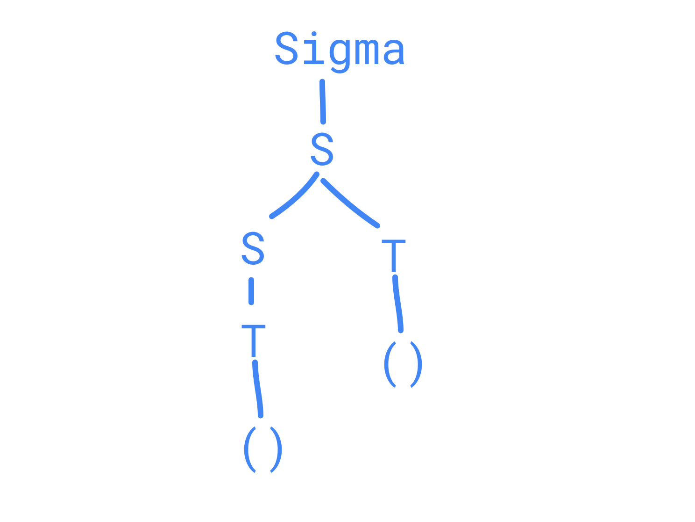
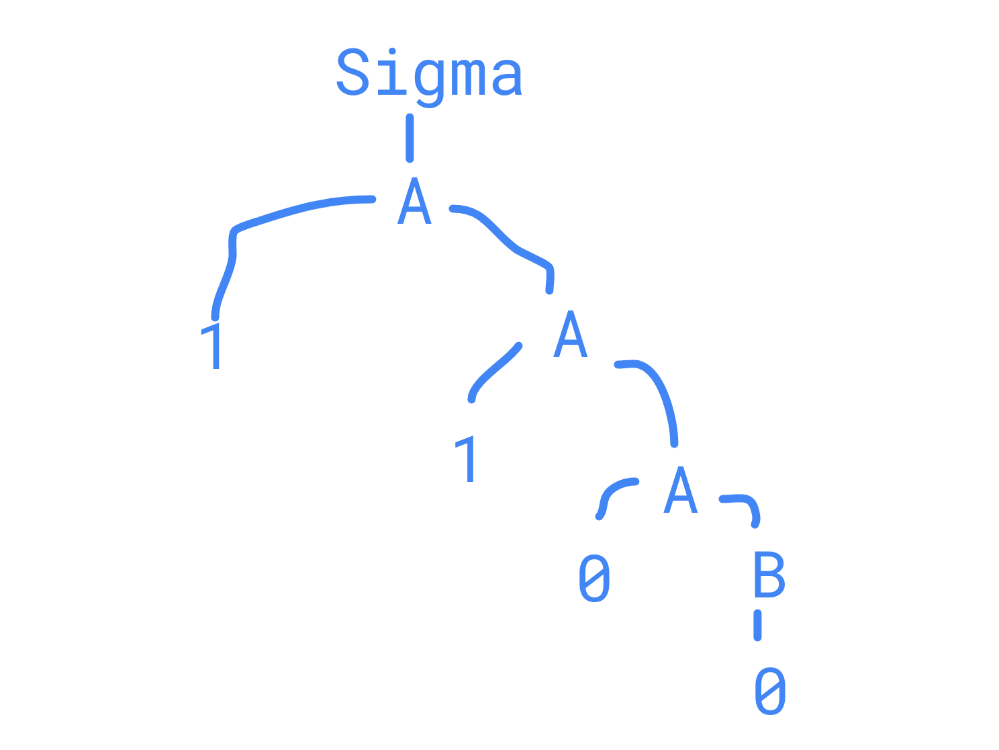
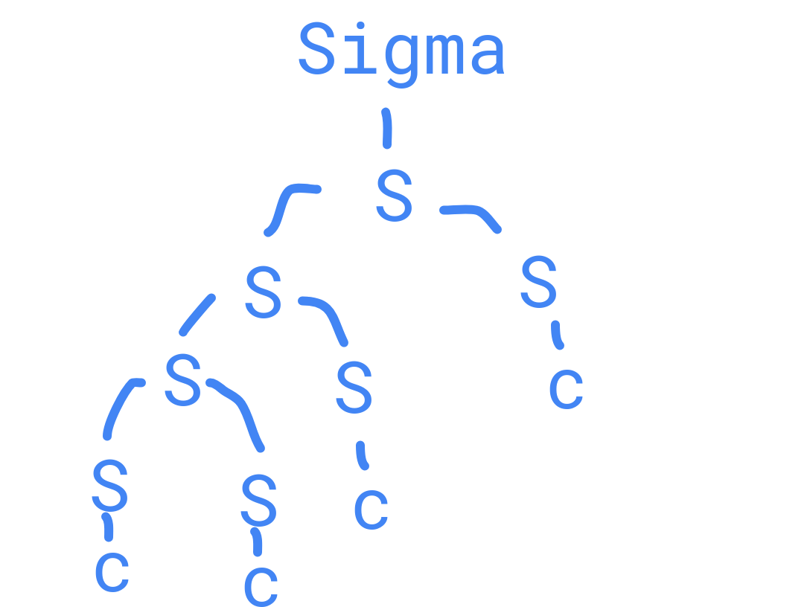
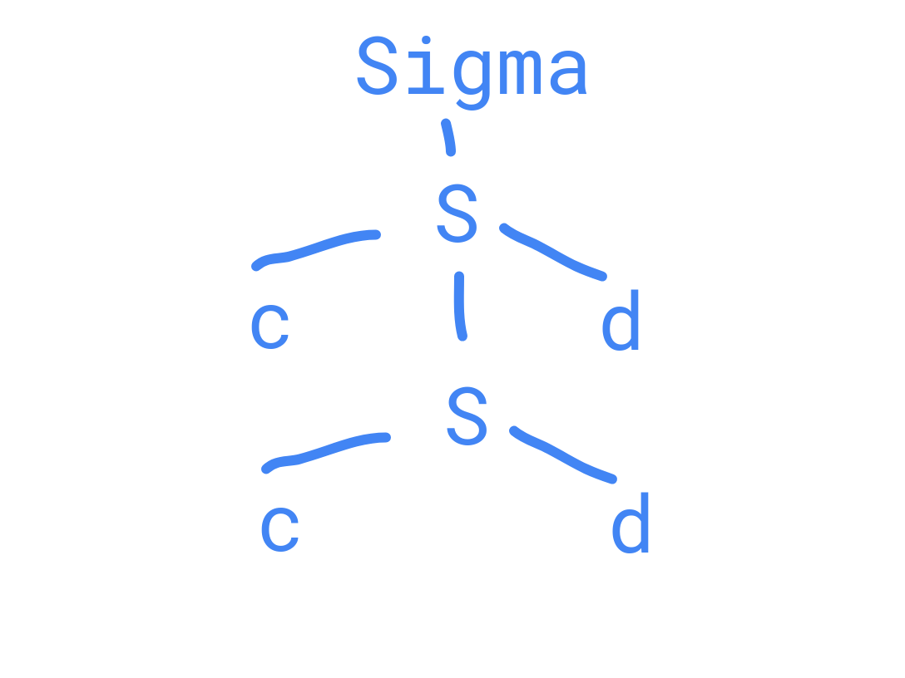
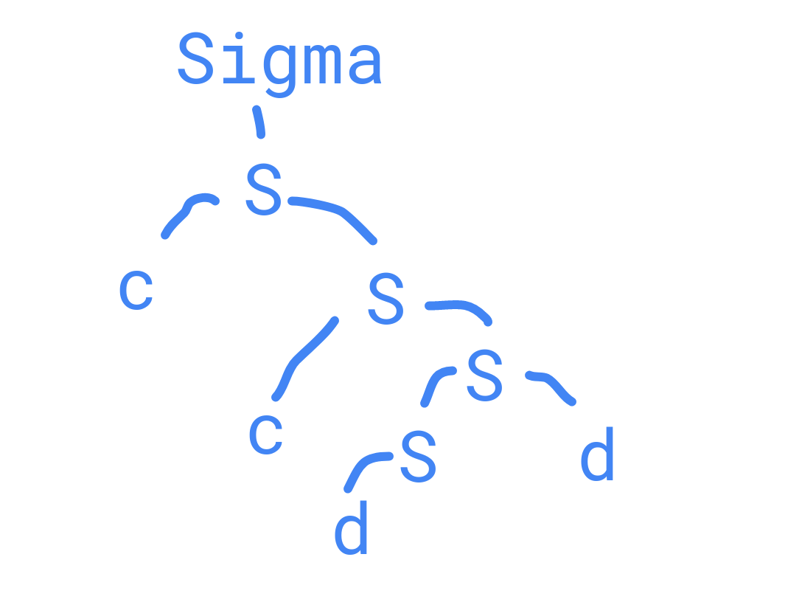

| G | L(G) informal | L(G) formal | L(G) regular | Tipo |
G1: Σ→S
S→ST
S→T
T→(S)
S→(S)
T→() | {(),(()),()(),(()()),(())()...} | {[(n)n]m∣n>1,m>1} | [[()]+]+
PCRE
\((?:[^)(]+|(?R))*+\) | Tipo 2. |
G2: Σ→A
A→1A
A→0B
B→0B
B→0 | {00,000,0000,...,100,1100,...} | {1m0n∣n≥2,m≥0} | | Tipo 3. Lineal derecha. |
G3: Σ→λ
Σ→S
S→SS
S→c | {λ,c,cc,ccc,cccc,...} | {cn∣n≥0} | c* | Tipo 2. |
G4: Σ→λ
Σ→S
S→cSd
S→cd | {λ,cd,ccdd,cccddd,ccccdddd,...} | {cndn∣n≥0} | (cd)* | Tipo 2. |
G5: Σ→λ
Σ→S
S→Sd
S→cS
S→c
S→d
| {λ,c,cc,ccc,...,d,dd,cd,cdd,cddd,...,ccd,cccd} | {cndm∣n≥0,m≥0} | c*d* | Tipo 2. |
G1, w=()()G2, w=1100G3,w=ccccG4,w=ccddG5,w=ccdd2.a L(G1)=10∗
G1:Σ→BB→B0∣1
2.b L(G2)=10∗
G2:Σ→1B∣1B→0B∣0 2.c L(G3)=ab∗∪c∗
G3:Σ→aB∣CB→bB∣λC→cC∣λ
- a
L(Ga)={0m1n∣m%2=0,n≥0}
Ga:Σ→ABB→1B∣λA→A00∣λ - b
L(Gb)={0m1n∣n%2=0,m≥0}
Gb:Σ→ABA→A0∣λB→11B∣1 3.c
L(Gc)={0m1n∣m%2=0,n%2=0}
Gc:Σ→ABA→A00∣λB→11B∣1
3.d
L(Gd)=(1∗(00)∗1∗)∗
Gd:Σ→AA→1A∣ABA∣λB→00Σ 3.e
L(Ge)={aibj∣i<j}
Ge:Σ→aΣb∣Σb∣b 3.f
L(Gf)={aibj∣i<2j}
Gf:Σ→Σb∣ab∣Σb∣aΣb∣aaΣb 3.g
L(Gg)={aibj∣i>2j}={aibj∣i≥1,⌈2i⌉−1≥j≥0}
Gg:Σ→a∣aΣ∣aaΣb 3.h
L(Gh)={aibj∣i=2j}=L(Gf)∪L(Gg)
Gh:Σ→Σf∣Σg 3.i
L(Gi)={0m1n∣m>n≥0}
Gi:Σ→0∣0Σ∣0Σ1
3.j
L(Gj)={0m1n0k∣k=m+n}
k=m,n=1
G:Σ→0Σ0∣1Σ→λ k=n,m=1
G:Σ→0AΣ→λA→1A0∣λ k=n+m
Gj:Σ→0Σ0∣λ∣AA→1A0∣λ 3.k
L(Gk)={0m1n0k∣n=m+k}
n=m,k=1
G:Σ→A0∣λA→0A1∣λ n=k,k=1
G:Σ→0B∣λB→1B0∣λ n=m+k
Gk:Σ→ABA→0A1∣λB→1B0∣λ 3.l
L(Gl)={wcwR∣w∈{0,1}∗}
∣w∣=0
w∈{0,1}∗, c
G:Σ→0Σ0∣1Σ1∣c 3.m
L(Gm)={w:na(w)=nb(w)}
If w=a,na(w)=1
...
If w=an,na(w)=n
If w=b,nb(w)=1
...
If w=bn,nb(w)=n
L(Gm)={λ,ab,aabb,aaabbb,...,ba,bbaa,bbbaaa,...,abab,ababba,baab,...}
Gm:Σ→ΣΣΣ→aΣbΣ→bΣaΣ→λ - L1={anbm:n≥0,m>n}
an is free, so a rule is A→aA∣λ
m>n, at least L has a b B→aBb∣Bb∣b
G1:Σ→aΣb∣BB→Bb∣b - L2={anb2n:n≥0}
an, A→aA∣λ
b2n, B→Bbb∣λ
G2:Σ→aΣbb∣λ 6. L3={an+2bn:n≥1}
an+2, A→aA∣aaa
bn, B→bB∣b
G3:Σ→aΣb∣aaab - L4={anbn−1:n≥3}
an, A→aA∣aaa
bn−1, B→Bb∣bb
G4:Σ→aΣb∣aaabb - L1L2
G5=Σ→AXA→aAb∣BB→Bb∣bX→aXbb∣λ
9.L1∪L2
G6=Σ→A∣XA→aAb∣BB→Bb∣bX→aXbb∣λ - L13
L1={anbm:n≥0,m>n}
{kind=link}
.png){kind=link}
.png){kind=link}
.png){kind=link}
.png){kind=link}